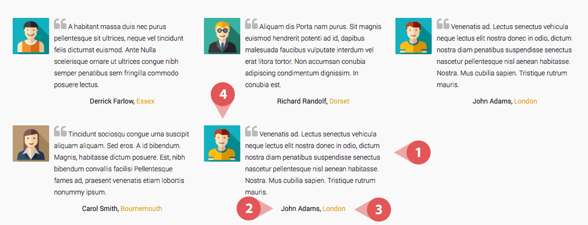
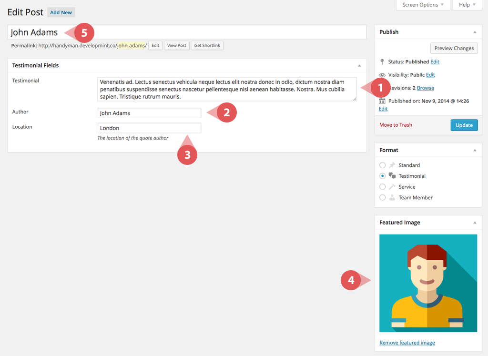
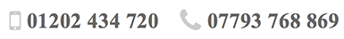

Welcome to Trade Theme!
Trade Theme has been designed specifically for tradesman such as electricians, builders, plumbers etc. Our objective with Trade Theme is to provide a clean design that works on all devices and converts visitors in to customers.
Thanks for Buying
Thank you for buying this theme. This document provides detailed information on how to get the theme up and running quickly. If you're stuck with anything, please don't hesitate to contact us.
- Created By: Company Name
- Version: 1.0
Quick Start
Use the following set of steps to quickly get your site set up to look similar to the demo site.
Installation
There are two methods to install themes in Wordpress. If the standard installation method (A) is not supported by your web host, you will have to use the alternative method (B).
A. Normal Installation
-
Login to the WordPress Admin and browse to Appearance > Themes.

-
Click on the Add New (or "Install Themes" tab for older versions) button and then click Upload Theme on the next page.


-
Browse your computer to select "tradesman.zip" (it's located in the zip file you downloaded after purchasing the theme). Click "Install Now" button.

-
Once it's uploaded, click the Activate link.

B. FTP Installation (alternative method)
- Use your FTP software (i.e. Filezilla) to browse to the wp-content/themes folder.
- Extract smartmag.zip and upload the smart-mag folder.
-
Once it's uploaded, go to your WordPress Admin, browse to Appearance > Themes.

-
Click the Activate link.

Important After activation, you will be presented with several plugins that you must activate in order for all of the theme features to be available.
Sample Content Import (optional)
Installing the sample content will set the theme up to look similar to the demo site. It will provide you a clear reference of how the theme is set up to achieve the desired look. However, we strongly advise against using this method in production. Importing content will most likely fail on shared web hosts. If it fails, uncheck the "import attachments" option and try again.
Warning Please do not import content on a WordPress installation that already has a lot of content. Or the very least, make a backup first. A catastrophic mess can be created.
-
Log into Admin and go to Tools > Import > WordPress.


-
Install the WordPress importer.
-
Select the tradesman-sample.xml (located in the main zip file in the Sample Data folder) and upload it.
-
On the next screen, under Assign Authors, select or enter a new username for each author.

- Checking "Download and import file attachments" will download placeholder images.
- The process can take several minutes, so please be patient.
-
In order to setup the site navigation, go to Appearance > Menus > Manage Locations. Select "Main Menu" from the dropdown for "Header Navigation".

- At this point the site will closely resemble the demo site.
Tip If it fails, uncheck "Download and import file attachments" and try again.
Tip If it still fails, you will have to request your webhost to increase your PHP max_execution_time (or any other webserver timeout to at least 300 secs) and memory_limit (to at least 196M) temporarily.
Permalinks (URL Structure)
The commonly used URL structure is when the page name appears in the site url.
Example: http://www.site.com/contact-us
-
Navigate to Settings > Permalinks

-
Select Post Name from the list of Permalink Settings.

-
Save the changes.

Creating Pages
The Tradesman Theme comes equipped with several page templates. Each of the templates achieves a specific page layout that is demonstrated on the demo site.
Creating a Page
-
Navigate to Pages > Add New

-
Select a page template from the sidebar

-
Save the page as a draft

- When the page reloads, the page fields will have changed to reflect the selected template.
- Refer to the template specific sections below for detailed information about what each field does.
-
After filling in the fields, publish the page

Page Templates
- Homepage: You can see an example of this template on the demo site.
- Services: You can see an example of this template on the demo site.
- Testimonials: You can see an example of this template on the demo site.
- About Us: You can see an example of this template on the demo site.
- Contact: You can see an example of this template on the demo site.
- Default: This is a bare-bones template. It has a page title and content area populated by a WYSIWYG. You can see an example of this template on the demo site.
Sidebar
Detailed instructions can be found in the Sidebar & Widgets section.
Homepage
To create the homepage, select the Homepage Template. Refer to Creating Pages for instructions on how to create a new page.
The homepage is often the first page a visitor will land on and first impressions count. You can see an example of what the homepage looks like on the demo site.
Filling in the homepage fields
Header Block
- Benefits and Quote Request Form
- To add features and benefits, refer to the images below. Choose product/service/brand benefits that give your visitors good reason to choose your company. E.g. Free Quote, No Callout Charge etc.
- To add the quote request form, enter your Contact Form 7 shortcode.
-
Refer to the Setup Contact Forms section for instructions on how to generate the shortcode.

-
Features / Services Block
This section is primarily designed to house the 3 best features of your services, but it can also be used for services or anything else you choose.
- Testimonial Block
- To add a testimonial, simply select a previously created testimonial from the dropdown list.
- Refer to the Adding Testimonials section for details on how to create the testimonials that appear in the dropdown.
-
The homepage supports 3 testimonials.
-
Call to Action Block. Visitors who have scrolled down far enough to reach this section are likely reasonably interested in your services, now is great opportunity to turn the visitor in to a customer. Give them everything you've got, an offer they cannot refuse, followed by the best way to contact you.
Setting The Homepage
Once you've created a page that you would like to use as your homepage, follow these steps:
-
Go to Settings > Reading.

- Under Front page displays choose "A static page" option.
-
Next to Front Page, select the page you created to be used as the homepage.
- Save Changes.
Services Page
This is where you list your companies services. This page also supports a contact page, so that the visitor can contact you, right there on the page.
When creating the services page, select the Services Template. Refer to Creating Pages for instructions on how to create a new page.
Services Template Fields
- The Services field will allow you to select existing services from the dropdown.
- Refer to the Adding Services section for details on how to create the services that appear in the dropdown.
- You can add as many services as you like, on desktop they will appear 3 in a row.
- The Form Shortcode field requires a shortcode from the plugin: Contact Form 7
- Refer to the Setup Contact Forms section for instructions on how to generate the shortcode.
Testimonials Page
Add as many testimonials as you can, the more the better. When possible include as much information about the customer, this will give your testimonials more legitimacy.
When creating the testimonials page, select the Testimonials Template. Refer to Creating Pages for instructions on how to create a new page.
Testimonials Template Fields
- The Testimonial Format specifies the layout for the page. The testimonials can be formatted to show 1, 2, or 3 per row.
- You can add unlimited testimonials.
- The Testimonials field will allow you to select existing testimonials from the dropdown.
- Refer to the Adding Testimonials section for details on how to create the testimonials.
About Us Page
As well as talking about your company, include what your company can do for the visitor. What makes your company unique, why should the visitor choose you over a competitor? Talk about your experience, success, awards and accreditations you've earned. Introduce some of your team and then follow up with testimonials to offer social proof.
When creating the about us page, make sure to select the About Us Template. Refer to Creating Pages for instructions on how to create a new page.
About Us Template Fields
- Template Fields
-
Meet The Team Block Fields
- Testimonials Block Fields
- The Testimonials field will allow you to select existing testimonials from the dropdown.
- Refer to the Adding Testimonials section for details on how to create the testimonials.
-
The about page supports up to 3 testimonials.
-
Call to Action Fields
Contact Us Page
The contact us page is for your to provide details on how your customers can contact you. This page also supports testimonials to aid conversions.h
When creating the contact us page, make sure to select the Contact Us Template. Refer to Creating Pages for instructions on how to create a new page.
Contact Us Template Fields
-
Contact Fields
- Testimonial Fields
- The Testimonials field will allow you to select existing testimonials from the dropdown.
- Refer to the Adding Testimonials section for details on how to create the testimonials that appear in the dropdown.
-
The contact page supports 3 testimonials.

Default Page
The default template is for you to create additional pages, for example a privacy policy.
When creating a default page, make sure to select the Default Template. Refer to Creating Pages for instructions on how to create a new page.
Adding Content
The Tradesman Theme comes equipped 3 types of custom content (post) types. They include Services, Team Members, and Testimonials. Each custom content type is used to easily create content such as a testimonial, which you can then use repeatedly throughout the website.
Adding a Content Post
-
Select Add New from the dropdown for the desired content type in the sidebar menu.

-
Fill in all of the available fields.
Note Refer to the content specific sections below for detailed information about what each field does.
-
After filling in the fields, publish the page
Adding Services
The services content type is used to show the individual services that appear on the services template page. Each time you create a service, you can attach it to the page template in any desired order.
Note Refer to the Services Page section for instructions on how to attach existing services to the template page.
Service Fields

Adding Testimonials
The testimonials provide an interface for you to easily show customer testimonials in various places throughout the site. You create one instance of a testimonial and can easily have it appear on several different page templates.
Note Testimonials appear on several pages throughout the site. Refer to the Homepage, Testimonials Page, About Us Page, and Contact Us Page sections for instructions on how to add testimonials to the different template pages.
Testimonial Fields
 Adding Team Members
The team members content type is used to feature members of your team on the about us page. It allows you to create individual team members and have them appear in any desired order on the about page.
Note Refer to the About Us Page section for instructions on how to attach existing team members to the template page.
Team Member Fields
Setup Contact Forms
Request a Quote Form
Setting up the request a quote form requires that you install the "Contact Form 7" (go to Appearance > Install Plugins if you have not already installed it).
First create a contact form:
-
Go to Contact > Add New.

- Select the desired language and click Add New
-
Name the Contact form Request a Quote

-
Replace the form content with the following:
<div class="form-half"> [text* your-name placeholder "Name"] </div> <div class="form-half"> [email* your-email placeholder "Email"] </div> <div class="form-full"> <p>[textarea your-message x5 placeholder "Message"]</p> <p>[submit "Get Your Quote"]</p> </div> - Edit the "Mail" settings to suit your needs and Save
- For more information, refer to Contact Form 7's FAQ and Docs.
Once you have created your form:
-
Go to Contact again. Copy the code under the Shortcode column.

- Navigate to the Homepage and paste the shortcode into the Form Shortcode field.
Get in Touch Form
Setting up the get in touch form requires that you install the "Contact Form 7" (go to Appearance > Install Plugins if you have not already installed it).
First create a contact form:
-
Go to Contact > Add New.
- Select the desired language and click Add New
-
Name the Contact form Get in Touch

-
Replace the form content with the following:
<div class="form-half"> [text* your-name placeholder "Name"] </div> <div class="form-half"> [email* your-email placeholder "Email"] </div> <div class="form-full"> <p>[textarea your-message x5 placeholder "Message"]</p> <p>[submit "Send Your Message"]</p> </div> - Edit the "Mail" settings to suit your needs and Save
- For more information, refer to Contact Form 7's FAQ and Docs.
Once you have created your form:
-
Go to Contact again. Copy the code under the Shortcode column.

- Navigate to the Services Page and paste the shortcode into the Form Shortcode field.
- Navigate to the Contact Us Page and paste the shortcode into the Form Shortcode field.
Setup Navigation & Menus
If you have imported demo content, refer to (a), otherwise refer to (b) to create a new menu.
(a) Existing Menu
-
Go to to Appearance > Menus.

-
In the "Manage Locations" area, under Header Navigation, select Main Menu. Click Save.
-
In the "Manage Locations" area, under Footer Navigation, select Footer Menu. Click Save.
(b) Creating a New Menu
-
Go to to Appearance > Menus.
-
Click on the + button or the create a new menu link. Enter a menu name and click Create Menu.

- Using the Custom Links and Pages boxes at the left, add items to the menu and drag/drop to arrange them.
-
Select the Manage Locations tab and assign the newly created menu a location
- Click Save Menu.
Header & Logo Setup
Custom Logo
By default, your site title will be a text-based logo. However, you can also use an image-based logo.
Multi-colored Text-based Logo
-
Go to Appearance > Theme Options.

-
Under Logo Text, specify the website/company name.
Note The first word in the name will appear in black, while any additional words will appear in the theme color.
- Save Changes.
Using an Image-based Logo
To be retina friendly (look high quality on devices like iPad), you will have to create two images of your logo. One the normal size and the second exactly double the height and width.
-
Go to Appearances > Theme Options.
- Under Logo Image, click Upload button.
-
Upload your second logo (2x size) under Logo Image Retina (2x).

- Click Save Settings.
Phone Numbers
The Tradesman theme supports a phone number and cell phone number that appear in the global header.
-
Go to Appearances > Theme Options.
- Under Phone Number, enter your phone number.
-
Under Cell Phone Number, enter your cell phone number.

- Click Save Settings.
Sidebars and Widgets
The theme comes equipped with two custom widgets that can be put into the sidebar. The first widget allows for an embedded google map showing your location, and the second provides a list view of the available services.
How to use widgets
-
Go to Appearance > Widgets.

- Site Sidebar is the main right sidebar.
- Expand the box at right, where you would like to place your widget, by clicking on the arrow icon next to it.
- Drag & drop the widget you wish to use, in the expanded area below the box.
- Fill in the information necessary and click Save.
Tradesman Google Map Widget
The Google map widget allows you to embed an interactive google map into the sidebar of the website.
How to get a Google Maps Embed:
- Go to Google Maps.
-
Find the desired location
-
Under Settings click Share and embed map

-
Click the Embed map tab and copy the IFRAME code
-
Paste the IFRAME code into the Google Maps Embed field
- Save the widget
Google Map Widget Fields

Tradesman Services Widget
The Services Widget allows you to provide an overview of the offered services.
Services Widget Fields
Footer Setup
The Tradesman Theme comes with a footer that's split into two sections, the left and the right. The left side shows a simple copyright, while the right side shows a menu.
-
To edit the copyright, navigate to Appearance > Theme Options and update the copyright field.


- Refer to the Setup Navigation section for instructions on creating a menu and getting it to appear in the footer
Color Scheme
The Tradesman Theme comes with a footer that's split into two sections, the left and the right. The left side shows a simple copyright, while the right side shows a menu.
-
Go to Appearance > Theme Options.
-
Under Color Scheme, select the desired theme color scheme.

- Save Changes.
Translation & Internationalization
The Trade Theme contains no hard coded english text, therefore no additional work is required to translate the theme. Everything that appears on the frontend of the site is editable through the Wordpress CMS.
Your Language & Localization
You may wish to use the correct locale to translate and localize your WordPress installation completely. Refer to Installing WordPress In Your Language at WordPress Codex to learn how to.
RTL Version
For languages that read from right-to-left unlike English which is left-to-right, SmartMag will automatically switch to an RTL style, as long as you it's in your language and uses the correct locale (as explained above).
Advanced Customizations
For layout customizations beyond the settings built into the theme, the best option is to create a child theme.
Child Theme
WPBeginner has a great article on How to create a WordPress Child Theme. Use Template: tradesman instead of twentyeleven.
Also, use @import url("../tradesman/style.css"); in the CSS file to import parent stylesheet.
Copyright & Credits
Demo Images Authors creative commons, not included
- Demo Images (Not Included): (flickr CC-BY-2.0) Yasser Alghofily, Daniel Zedda, Jonathan Kos-Read, Alejandro Pinto, Jim H., Luis Hernandez, William Cho, Lucas Zallio, Mark Sebastian, Lies Thru a Lens.